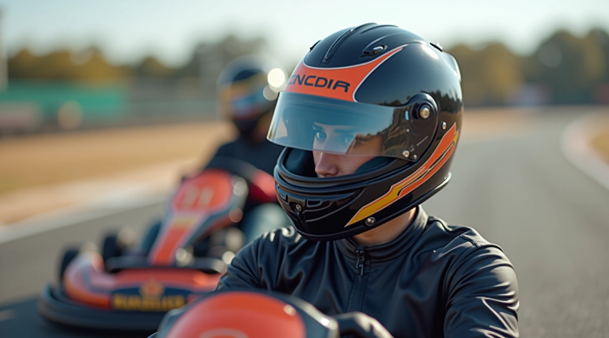

تمارين سرعة ردة الفعل للمبتدئين
تعرّف على أبسط التمارين لتحسين سرعة استجابتك أثناء السباق دون الحاجة لمعدات غالية الثمن
اقرأ المزيددليل شامل لتطوير المهارات البدنية والعقلية في رياضة الكارتينج
سبتمبر 2026

اكتشف أهم التقنيات والتمارين لتحسين أدائك
تعرّف على أبسط التمارين لتحسين سرعة استجابتك أثناء السباق دون الحاجة لمعدات غالية الثمن
اقرأ المزيد
برنامج تدريب يركز على تقوية عضلات البطن والظهر والكتفين وهي الأساس للتحكم الأفضل بالسيارة
اقرأ المزيد
تعرّف على روتين الاستطالة اليومي الذي يحسّن مدى حركتك ويقلل من الإصابات أثناء التدريب
اقرأ المزيد
طرق علمية لقياس تحسّن سرعة ردة فعلك ولياقتك البدنية مع نصائح عملية للمراقبة المنتظمة
اقرأ المزيدسائقو الكارتينج الناجحون يدركون أن اللياقة البدنية وسرعة ردة الفعل ليسا خيارين بل ضروريان. قوة الجسم تساعدك على التحكم الأفضل بالسيارة لفترات طويلة، بينما تحسّن سرعة ردة الفعل من قدرتك على اتخاذ قرارات سريعة في المنعطفات والمواقف الحرجة. الدراسات تشير إلى أن سائقي الكارتينج الذين يتبعون برامج تدريب منتظمة يحسّنون أوقاتهم بنسبة ملموسة مقارنة بأقرانهم الذين لا يركزون على التدريب البدني.
قائمة فحص شاملة لبدء رحلة التدريب
لا تحاول فعل كل شيء في اليوم الأول. ابدأ بثلاث أو أربع تمارين بسيطة وزد التعقيد تدريجياً
جلسات تدريب منتظمة 3-4 مرات أسبوعياً أفضل من جلسة واحدة مكثفة. الاستمرارية هي السر
10 دقائق إحماء قبل التمرين و5 دقائق استطالة بعده تقلل من الإصابات بشكل كبير
النوم الكافي والغذاء الصحي يساعدان عضلاتك على التعافي والنمو. لا تهمل هذه الجوانب
سجل أوقاتك وقياساتك كل أسبوعين لترى التحسن الفعلي وتبقى متحفزاً
إذا شعرت بألم أو لم تكن متأكداً من تقنية معينة، لا تتردد في طلب مساعدة مدرب محترف